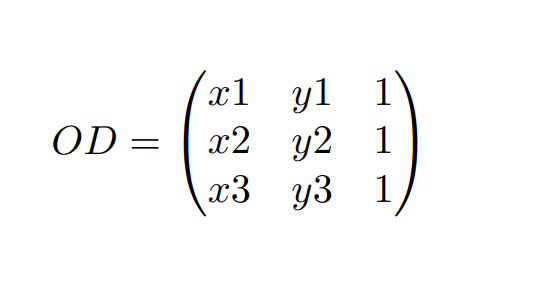
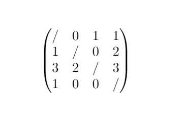

Introduction
Here you will find resources to understand what order types are and how we can manipulate them to learn about point sets. Besides a tutorial, the website also provides a glossary of terms directly related to order types or that are more general in Computational Geometry as well as an interactive demo.
The data used to compare user inputs with or to look up a property comes from the exhaustive database of Order Types of upto 11 points along with some properties about them provided by O. Aichholzer, F. Aurenhammer, and H. Krasser. The database can be found here.
Please visit the different pages of the website to explore what it has to offer.
Tutorial - What is an order type
In this section we want to explain in an intuitive way what order types are and how we can manipulate them as well as some of their applications.
We will start by giving you the full definition and then we'll brake it down and understand it piece by piece.
The order type of a set {p1, p2, ..., pn} of points in general position is a mapping that assigns to each ordered triple i, j, k in {1, ..., n} the orientation (clockwise or counter-clockwise) of the point triple pi, pj, pk.
Ok, as expected, this is still a bit obscure, but it will all make sense soon!
Let's start with the easy part: the point set. This really is what it sounds like; a collection of points. Consider, for example, the following point set S of 6 points in the plane.
The following concept is that of general position. This is a property that can apply to points or to lines.
- For points it means that no three points in the given set can be co-linear (on the same line).
- Two lines that are not parallel will inevitable intersect. General position for lines simply means that no three lines can intersect in the same point.
The following construction shows a set of points that is NOT in general position. Adding p7 to S broke the property as it is now possible to draw a line through p3, p7 and p2.
Now, let's skip ahead a bit and talk about the orientation of a triple of points.
The orientation of an ordered triple of points expresses how the third point is positioned relative to the first two. Three points p1, p2, p3 can only be in three different orientations: clockwise, counter-clockwise or aligned. The following figure shows the three options.
- In red: p3 lies on the left of p1p2 and p1,p2,p3 form a left turn (counter-clockwise rotation)
- In purple: p3 is on p1p2 and p1, p2, p3 form a straight line (aligned)
- In blue: p3 lies on the right of p1p2 and p1, p2, p3 form a right turn (clockwise rotation)
The orientation of three points can be computed by the following matrix called Orientation Determinant. When the value of the determinant d is d<0, d=0, d>0 the three points form a counter-clockwise, no, clockwise rotation.
Good, now we're ready to tackle the main part of the definition.
The somewhat complicated formulation boils down to this: For each triple of points in the set keep their orientation.
A more intuitive definition is a question: "In what way are the points of this set arranged relative to each other?". For example, all sets of four points fall into two order types. One point set is drawn below for each.
For size four, either the points are in the arrangement "triangle containing a point" or "no triangle
contains another
point".
For size five, the possible arrangements are a pentagon, a quadrilateral containing a point
or a triangle containing two points. All point sets of size four or five fall into these categories,
either directly or by symmetry.
The convex hull of the point set can be triangulated in many different ways, where the other points lie inside these triangulations determine (modulo symmetries) different order types.
This information can be used to compare different sets of points. Two sets with the same order type for example will have the same number of triangulations.
Tutorial - Order Type Encoding
Now that we understand what an order type is we need to know how to work with them. But, how do we compute the order type of a point set to learn about its properties and compare them to that of another set. We need a way to encode Order Types.
As the number of Order Types increases exponentially with the size of the set of points, efficiency is required.
Multiple encodings exist:
-
Triple orientation list: A literal approach would be to store for each triple of points their orientation. Triples are given lexicographical order (p1, p2, p3) , (p1, p2, p4), ... This is very space-inefficient.
LEFT
LEFT
RIGHT
... -
Point list: Instead of storing the orientation of triples, we could store the points themselves and recompute the triples when necessary. This is more compact but query times will suffer greatly
0, 158
56, 301
0, 254
15, 70
... -
λ-matrix: This is a matrix of size n * n (where n is the number of points) where each (i,j) position holds the number of points on the left of the directed line through points i and j.
This clever solution allows for a quadratic cost storage in the number of points and can be compared directly with other matrices.
Important note: For encodings where the encoding varies depending on the labeling of the points, like for triple orientation or λ-matrix encoding, the points are assumed to be in natural ordering. This means that the lexicographically smallest resulting encoding is chosen to represent the order type.
Interactive demo - Order Types database by Aichholtzer et al.
The exhaustive database of order types of up to 11 points and their properties is a collection of files. Each file describes order types or one of their properties of a particular size. The database has index files that are used to identify files corresponding to a specific order type.
These files range from "otypes03.b08" to "otypes10.b16". They contain one point set per order type. These order types are sorted by natural ordering. The number before the dot represents the number of points of the order type and the file extension the number of bits used to save each coordinate of a point.
Since the order types are sorted by natural ordering in the index files, binary search can be used to find the entry corresponding to a point set by comparing its λ-matrix to the λ-matrix of the point set at the currently evaluated entry. After this finding an entry containing a specific property of this order type can be done in constant time since it is located at the same entry offset as its order type in the corresponding file.
Interactive demo - Computing a λ-matrix of a point set
The λ-matrix used to describe an order type is always the lexicographically smallest matrix computed on any of the labellings of the the points in the set. As the number of arrangements of n points (used to determine the labelling) grows with the factorial of n, it is important to have an efficient algorithm to compute the smallest matrix as exhaustive search quickly becomes infeasible.
J. E. Goodman and R. Pollack describe an algorithm to compute the λ-matrix for a specific ordering in [Multidimensional sorting, 1983], and the algorithm for the natural ordering λ-matrix is described in [Aichholtzer et al., 2001].